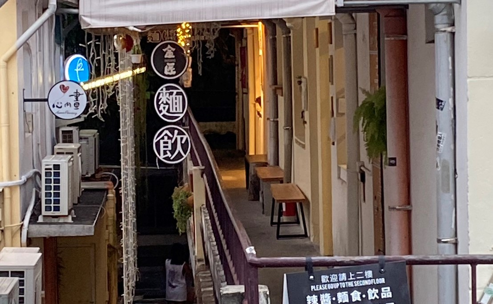
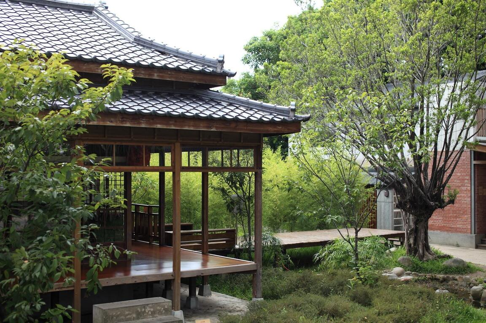

審計新村 鄰近馬路卻獨出一格的審計新村，便是在這片將近半世紀歷史的老宿舍，審計新村是臺中市第三批臺灣省政府宿舍群之一。省府時期審計處的員工眷舍，凍省之後成了閒置空間荒廢多年，面積雖然只有0.52公頃，但所處地點就在臺中勤美綠園道附近，因此更是顯示出審計新村的獨特性，老舊的建築充滿了時代痕跡。如今經由政府再規劃，成功轉型為青年創業基地，透過青年活力與創造力，激盪出令人目不暇給的空間韻味與獨特氛圍。
帝國糖廠 歷史建築帝國製糖廠臺中營業所興建於1935年，前身為日本帝國製糖株式會社之臺中工場營業空間，在臺中，帝糖見證著產業之興衰轉變，於2016年登錄為歷史建築。2019年重新開放，由好位子團隊負責策劃與營運，持續於帝糖策劃與推動產業文化展演、特色主題餐廳、ProLab職人坊，傳承在地精神，也為帝糖注入新的元素與活力。
刑務所演武場 興建於日治時期昭和12年(西元1937年)，為司獄官、警察日常練武之武道館舍，屬本市僅存之演武場，歷史原貌保存完整， 極具保存、再利用及建築研究價值。演武場建築群包括演武場主體建築及東側附屬建築，主體建築依對稱型式建造，中央後側設有神龕，面對神龕左側為柔道場、右側為劍道場，演武場內僅單側設有座席，與同時期類似建築武德殿相較，屬較小之武道設施。建築形式屬日治時期典型演武場，座基抬高，立面仿木結構及壁柱飾樣，屋頂入母式屋頂建造，有大型鬼瓦及博風板裝飾。
照片   圖片來源:自己 https://travel.taichung.gov.tw/zh-tw/attractions/intro/1423 https://travel.taichung.gov.tw/zh-tw/attractions/intro/796